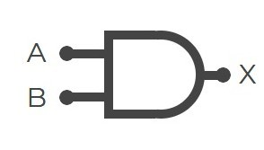
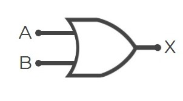
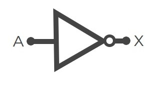

COMPUERTAS LÓGICAS
Análisis y Simulación de Compuertas Lógicas Básicas (AND, OR y NOT)
OBJETIVOS
Objetivo General:
Analizar el comportamiento de las compuertas lógicas básicas mediante su construcción y simulación.
Objetivos Específicos:
- Identificar las diferentes compuertas lógicas y sus símbolos.
- Construir circuitos lógicos básicos utilizando compuertas.
- Verificar las tablas de verdad mediante simulación y práctica.
CONCEPTOS
Compuerta AND
La salida es 1 (verdadera) solo si todas las entradas son 1. Si una de las entradas es 0 la salida es 0.

Tabla de verdad
| Entrada A |
Entrada B |
Salida |
| 0 | 0 | 0 |
| 0 | 1 | 0 |
| 1 | 0 | 0 |
| 1 | 1 | 1 |
Compuerta OR
La salida es 1 (verdadera) si al menos una entrada es 1. Si todas las entradas son 0 la salida es 0.

Tabla de verdad
| Entrada A |
Entrada B |
Salida |
| 0 | 0 | 0 |
| 0 | 1 | 1 |
| 1 | 0 | 1 |
| 1 | 1 | 1 |
Compuerta NOT
Invierte la entrada. Si la entrada es 1, la salida es 0; y si es 0, la salida es 1.

Tabla de verdad
MATERIALES Y EQUIPOS
- Computadora con acceso a Tinkercad Circuits (para simulación)
- Fuente de alimentación
- Protoboard
- Cables de conexión
- LEDs
- Resistencias
- Interruptores (Para simular entradas A y B)
- Chips lógicos (74LS08 = AND, 74LS32 = OR, 74LS04 = NOT)
- Multímetro (opcional)
PROCEDIMIENTO:
- Conectar la compuerta lógica en el protoboard según el circuito.
- Alimentar adecuadamente el chip.
- Probar las diferentes combinaciones de entradas y observar la salida.
- Registrar resultados.
- (Opcional) Simular los mismos circuitos en software.
TABLA DE RESULTADOS
| Entrada A |
Entrada B |
Salida esperada |
Salida real |
Observaciones |
| 0 |
0 |
0 |
0 |
Funciona OK |
| 0 |
1 |
1 |
1 |
Funciona OK |
| 1 |
0 |
1 |
1 |
Funciona OK |
| 1 |
1 |
1 |
1 |
Funciona OK |
ANÁLISIS Y DISCUSIÓN
- ¿Coincidieron los resultados reales con los esperados?
- ¿Qué errores se presentaron?
- ¿Qué sucede si no se conecta correctamente la alimentación del chip?
- ¿Cómo se interpreta una salida incorrecta?
CONCLUSIONES
- Las compuertas lógicas básicas pueden implementarse fácilmente con componentes TTL.
- El comportamiento real coincide con las tablas de verdad estudiadas.
- La simulación ayuda a verificar antes de construir.
ANEXOS
- Fotos del montaje físico.
- Capturas de pantalla del simulador.
- Tablas de verdad completas.
- Esquemas de conexión.